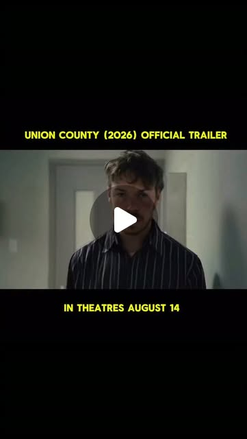

Instagram Reel

Union County (2026) official trailer. Written and directed by Adam Meeks 👀🍿
video transcript (enriched by ClaudeClaw)
Summary
[CAPTION]
Union County (2026) official trailer. Written and directed by Adam Meeks 👀🍿
The movie stands out for its profound commitment to realism.
[CAPTION]
Union County (2026) official trailer. Written and directed by Adam Meeks 👀🍿
The movie stands out for its profound commitment to realism. It was filmed on location in Bellefontaine, Ohio, inside a real-life drug court. To elevate the authenticity of the project, many of the supporting cast members including counselor Annette Deao are non-actors who were actually working through or managing the real program.
The film actually follows two fictional brothers, Cody and Jack Parsons, as they navigate a court-mandated adult drug rehabilitation program. Set in rural Ohio, the narrative highlights the deep personal and societal impacts of the American opioid crisis.
Meeks shot the film on a limited budget over a tight schedule from April 21 to May 16, 2025. He utilized real-life courtrooms and non-professional actors in Ohio to keep the production authentic and grounded.
In select theatres August 14 #reels #movie #socialrealism #unioncounty #adammeeks
[VIDEO]
Um, I'm Cody and I'm an addict. I've been uh addicted to opiates since I was 17, and uh I'm part of the adult recovery court program, and uh so I'm here. So the basic rules are to abstain from drugs and alcohol, attend the court sessions and appointments, and to submit to drug and alcohol testing. Familiar with these? Bathrooms at the end of the hall, be right behind you. Uh we treat everyone on a case-by-case basis. There's no rubric, but back to jail is always an option. Okay. You see the guy over there making up with that girl? That's my brother. That's my friend Kim. Sorry about that. Go for it. Um Do you need anything? Is there anything you can do to help you? No. Are you sure? Yeah, I'm sure. I think that there's just a lot that I cannot understand. No, I don't either. But I want to tell you that I'm sorry. Don't be so pretty. Our stories might not be the same, but they're still similar. I'm sure we've all had the shame and the guilt. I didn't do anything. Let me do everything I can for you and for Jack to help you guys get through this. They said as long as my background check comes about good, I'm good to start working there. Keep working hard, okay? Get yourself wrong. Good people. Like you said, it's people, places, and things. When you're in this program, Cody, you have to comply with the rules. So what's it gonna be?
View original on Instagram Reel →